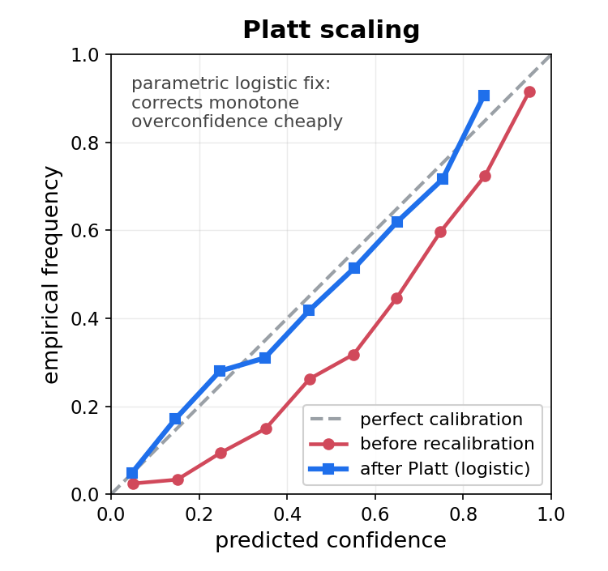
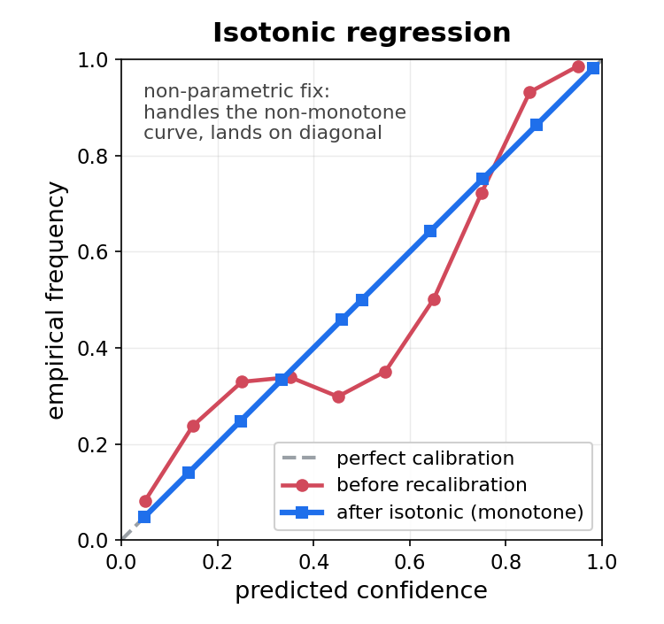

Machine Learning in Materials Processing & Characterization
Unit 7: Time-series and process monitoring
FAU Erlangen-Nürnberg


§0 · Frame
01. Why probabilistic forecasts matter
Materials processes are dynamical.
- Solidification, AM, rolling, heat treatment — observed as streams, not snapshots.
- A control loop must decide now, with the next sample arriving in milliseconds.
- “What is the next value?” is not enough — we need how confident are we?
Centre of gravity for today.
- Deterministic LSTM/GRU = baseline, not the destination.
- The destination is a predictive distribution \(p(x_{t+1}\mid x_{1:t})\) that is calibrated against reality.
- Without calibration, every threshold is a guess.
02. Week 7 self-study lecture — how to use this deck
Note
This is the Week 7 lecture, delivered as guided self-study.
The Tuesday 26.05.2026 lecture slot is cancelled (Pfingstdienstag — public holiday), so work through this deck independently. The Thursday 28.05.2026 exercise runs in class as scheduled and consolidates this material. This is a delivered part of the SS26 schedule, not optional reading.
What you can read here on your own.
- Sequences in materials processes.
- Deterministic RNN / LSTM / GRU as the baseline.
- Probabilistic heads, MC dropout, deep ensembles, calibration.
- Case studies: melt-pool, RUL, sensor fusion.
- One-slide pointer to Kalman as the linear-Gaussian limit.
Where the delivered curriculum picks it up.
- Heteroscedastic regression, conformal prediction → Unit 11 (Uncertainty & GPs).
- Closed-loop control on streaming data → Unit 10 (Automation).
- Long-context sequence models (Mamba, transformers) → Unit 9b (Transformers).
03. Learning outcomes
By the end of 90 minutes you can:
- Distinguish aleatoric and epistemic uncertainty in sensor streams.
- Build a deterministic LSTM baseline; explain why it under-reports risk.
- Replace the regression head with a Gaussian or MDN head and train via NLL.
- Use MC dropout and deep ensembles to estimate epistemic uncertainty.
- Read and produce calibration plots; apply Platt / isotonic recalibration.
- Recognise the Kalman filter as the linear-Gaussian limit of probabilistic state-space modelling.
- Detect process anomalies as low-likelihood events under a predictive distribution.
§1 · Sequences in Materials Processes
04. Beyond static images
So far in ML-PC.
- Unit 5/6: CNNs for snapshots of microstructures.
- Unit 7: robustness across snapshots.
- Static \(x \in \mathbb{R}^{H\times W\times C}\) with no time index.
Reality of materials manufacture.
- Materials are made by dynamic processes.
- Solidification fronts move; melt pools oscillate; rolls heat up.
- Observation is intrinsically a stream: \[x_1, x_2, \ldots, x_t \in \mathbb{R}^d, \quad t = 1, 2, \ldots\]
05. Process logs as data
Typical channels in a process log.
- Temperature: thermocouples, pyrometers, IR cameras.
- Pressure / gas flow: chamber pressure, shielding-gas flow rate.
- Mechanical: load cell, torque, vibration.
- Optical: photodiode, high-speed camera, spectrometer.
Heterogeneity is the rule.
- Sampling rates from \(1\,\mathrm{Hz}\) (chamber gas) to \(10^5\,\mathrm{Hz}\) (photodiode).
- Different physical units, ranges, noise statistics.
- \(\Rightarrow\) standardisation is per-channel, not global.
06. Why CNNs and MLPs fail on sequences
MLP.
- Treats \((x_1,\ldots,x_T)\) as a single fixed-length vector.
- No notion of order — a permuted input gives the same prediction.
- Cannot accept variable \(T\).
CNN (1-D).
- Has local translation equivariance — a useful prior!
- But the receptive field is fixed by depth; long-range dependencies require very deep stacks or dilations.
- Still no carried state between batches.
We need an architecture with memory — a hidden state \(h_t\) updated as new data arrive.
07. Sampling, stationarity, autocorrelation
Sampling rate vs. process timescale.
- Process bandwidth \(f_p\) (e.g., melt-pool oscillation \(\sim\) 10 kHz).
- Need \(f_s \ge 2 f_p\) — Nyquist again, in time (McClarren 2021).
- Under-sample \(\Rightarrow\) alias the dynamics; the LSTM cannot recover what was discarded.
Non-stationarity & autocorrelation.
- Yesterday’s calibration may not hold today (electrode drift, optic fouling).
- \(\rho(\tau) = \mathrm{corr}(x_t, x_{t-\tau})\): typically \(\rho(1) \gg \rho(10)\).
- The strongest predictor of \(x_{t+1}\) is often \(x_t\) itself — set the bar.
08. Why deterministic forecasts under-report risk
A point prediction.
- \(\hat x_{t+1} = f_\theta(x_{1:t}) \in \mathbb{R}\).
- No notion of spread. No prediction interval.
- For the control loop, this is one number.
A predictive distribution.
- \(p(x_{t+1}\mid x_{1:t})\).
- Encodes mean, variance, multimodality.
- Lets the controller take risk-weighted action.
Operational consequence. A 90 % prediction interval whose empirical coverage is 60 % is not a forecast — it is a liability. Calibration is non-negotiable for safety-critical loops.
§2 · Deterministic RNNs
09. The recurrent neuron
Feed-forward neuron.
\[y = \sigma(Wx + b)\]
- Input → output, no memory.
- Each example processed independently.
Recurrent neuron (McClarren 2021, sec. 7.1).
\[h_t = \sigma(W_h h_{t-1} + W_x x_t + b)\]
- Output at \(t-1\) feeds back as an input at \(t\).
- A loop in the computational graph.
- \(h_t\) summarises everything seen up to \(t\).
10. Unrolling and weight sharing
Unrolled view.
- Visualise the loop as a sequence of identical layers — one per time step.
- The same parameters \((W_h, W_x, b)\) apply at every step.
- This is the source of generalisation across sequence length.
Forward equations.
\[h_t = \tanh(W_{hh} h_{t-1} + W_{xh} x_t + b_h)\] \[\hat y_t = W_{hy} h_t + b_y\]
- Same network can process \(T = 10\) or \(T = 1000\).
- Cost is \(O(T)\) per forward pass.

Unrolled RNN — a loop becomes a chain of identical layers.
11. Backpropagation through time (BPTT)
The idea.
- Unroll the network for \(T\) steps.
- Compute the loss at each step (or only at the end).
- Backpropagate through the unrolled graph.
- Shared weights accumulate gradients across all time steps.
Truncated BPTT.
- Full BPTT through \(T = 10\,000\) is impractical.
- Cut the graph every \(k\) steps; carry \(h\) across cuts but stop gradient.
- \(k\) is a hyperparameter — typical \(k \in [50, 500]\).
12. Vanishing gradients
The mechanism (McClarren 2021, sec. 7.1.1).
- BPTT multiplies by the same recurrent matrix \(W_h\) many times.
- Eigenvalues \(|\lambda_i| < 1 \Rightarrow\) gradient \(\to 0\) exponentially in the number of steps.
- Distant past is “forgotten” — the model cannot learn long-range dependencies.
Why it is fundamental.
- \(\partial \mathcal L / \partial h_{t-k} \propto \prod_{j=1}^k W_h^\top \mathrm{diag}(\sigma'(\cdot))\).
- \(\tanh'(\cdot) \le 1\), so \(|W_h| < 1\) collapses gradient norms.
- \(|W_h| > 1\) explodes them — no free lunch.
13. Exploding gradients and clipping
Exploding gradients.
- \(|W_h| > 1 \Rightarrow\) gradient grows exponentially.
- A single bad mini-batch can produce \(\nabla \mathcal L = \infty\) → NaN.
- Visible as “loss explodes after 30 epochs of decreasing”.
Mitigations.
- Gradient clipping: rescale \(\nabla\) if \(\|\nabla\| > \tau\). Standard, cheap, effective.
- Careful initialisation: orthogonal \(W_h\), identity-recurrent.
- Layer / weight normalisation in the recurrence.
- The big one: switch to LSTM/GRU (next section).
14. Where vanilla RNNs work — and where they fail
Where they work.
- Stationary signals.
- Short horizons (single-digit steps).
- Low-noise sensors.
- Educational examples (sine recovery — Slide 44).
Where they fail.
- Long-range dependencies.
- High-noise process logs.
- Anything safety-critical — no uncertainty quantification.
- Multi-modal predictive distributions (LSTM alone cannot fix this either).
The first three failure modes motivate LSTM/GRU (next section). The fourth motivates Part 4 — the centre of gravity of today’s lecture.
§3 · LSTM and GRU
15. Solving the memory problem
Goal.
- Carry information across many steps without repeated multiplication by \(W_h\).
- Need a path along which the gradient is not attenuated.
The LSTM idea (Hochreiter and Schmidhuber 1997).
- Add a separate cell state \(C_t\) — a “conveyor belt”.
- Updates to \(C_t\) are additive, not multiplicative.
- Three gates control what is read, written, and exposed.
16. The LSTM cell state
\(C_t\) as a conveyor belt.
- Runs through the sequence with minimal interaction.
- Gradient flows along \(C\) almost unchanged — additive updates, no repeated multiplication by \(W\).
- Carries long-term memory.
\(h_t\) vs \(C_t\).
- \(h_t\) is the output — what downstream layers see.
- \(C_t\) is the internal memory — typically not exposed.
- Both have the same dimension; the parameter count of an LSTM is roughly \(4\times\) that of a vanilla RNN of the same hidden size.
17. The three gates
Forget gate. What to drop from \(C_{t-1}\). \[f_t = \sigma(W_f [h_{t-1}, x_t] + b_f)\]
Input gate. What new information to write. \[i_t = \sigma(W_i [h_{t-1}, x_t] + b_i)\] \[\tilde C_t = \tanh(W_C [h_{t-1}, x_t] + b_C)\]
Cell-state update. \[C_t = f_t \odot C_{t-1} + i_t \odot \tilde C_t\]
Output gate. What to expose as \(h_t\). \[o_t = \sigma(W_o [h_{t-1}, x_t] + b_o)\] \[h_t = o_t \odot \tanh(C_t)\]
Each gate is a small sigmoid network on \((h_{t-1}, x_t)\).
18. Why LSTMs do not vanish
The crucial line. \[C_t = f_t \odot C_{t-1} + i_t \odot \tilde C_t\]
When \(f_t \approx 1\) and \(i_t \approx 0\) (forget nothing, write nothing), \(C_t \approx C_{t-1}\) — the identity in the recurrence.
Gradient flow.
- \(\partial C_t / \partial C_{t-1} = f_t\).
- If \(f_t\) is on (close to 1), gradient flows back unchanged.
- The additive structure prevents the multiplicative collapse.
- Long-range dependencies become learnable.
19. GRU — a simpler gate structure
Gated Recurrent Unit (Cho et al. 2014).
- Merges \(C\) and \(h\) into a single state.
- Two gates: update \(z_t\) (= forget + input combined), reset \(r_t\).
\[z_t = \sigma(W_z[h_{t-1}, x_t])\] \[r_t = \sigma(W_r[h_{t-1}, x_t])\]
Update. \[\tilde h_t = \tanh(W_h[r_t \odot h_{t-1}, x_t])\] \[h_t = (1-z_t) \odot h_{t-1} + z_t \odot \tilde h_t\]
- \(\sim 3\times\) the parameters of a vanilla RNN (vs \(\sim 4\times\) for LSTM).
- Comparable performance on most tasks.
20. RNN vs LSTM vs GRU at a glance
| Property | RNN | LSTM | GRU |
|---|---|---|---|
| Hidden state | \(h\) | \(h, C\) | \(h\) |
| Gates | 0 | 3 | 2 |
| Params (rel.) | \(1\times\) | \(\sim 4\times\) | \(\sim 3\times\) |
| Long-range | Poor | Good | Good |
| Default? | No | Yes | Yes (compute-bound) |
Decision rule.
- Short signals, low noise → vanilla RNN may suffice.
- Long-range dependencies, big GPU → LSTM.
- Long-range dependencies, edge / PLC → GRU.
- Sequence length \(> 10^4\), transformer-scale data → reach for attention or state-space models.
21. Bidirectional and stacked RNNs
Bidirectional RNN.
- One pass forward (\(h_t^{\rightarrow}\)), one pass backward (\(h_t^{\leftarrow}\)).
- Concatenate: \(h_t = [h_t^{\rightarrow}; h_t^{\leftarrow}]\).
- Use only when the whole sequence is available offline.
- Not for real-time control — backward pass requires the future.
Stacked RNN.
- Layer \(\ell\) takes \(h^{(\ell-1)}_{1:T}\) as input.
- Lower layers learn fine-scale; upper layers, coarse-scale.
- Diminishing returns past 2–3 layers for process monitoring.
- Add dropout between layers, not within (next section makes this critical).
22. Stacked encoders and seq-to-seq
Encoder–decoder structure.
- Encoder LSTM reads input sequence \(x_{1:T}\) → context \(c\).
- Decoder LSTM produces output sequence \(y_{1:T'}\) from \(c\).
- Output length \(T'\) can differ from input length \(T\).
Materials-relevant uses.
- Process log → predicted microstructure descriptor sequence.
- Sensor stream → forecast horizon \(> 1\) step (recursive multi-step).
- Diffractogram trace → unit-cell-parameter trajectory.
Where this leads. Attention (Bahdanau et al. 2015) was originally an encoder–decoder fix; transformers (W10) drop the recurrence entirely. We will not develop attention here — keep the RNN as the recurrent baseline.
23. State-Space Models (Mamba) — linear-time sequence modelling
Why look past LSTM at all.
- LSTM is \(\mathcal{O}(L)\) but strictly sequential — no parallel training across time.
- Transformer is parallel in training but \(\mathcal{O}(L^2)\) memory in attention.
- Mamba (Gu and Dao 2023) is \(\mathcal{O}(L)\) at inference with parallel training via the selective scan.
Materials hook. LPBF melt-pool monitoring at 10 kHz over a 100-layer build \(\Rightarrow 10^7\)+ frames per part. Both LSTM (slow to train) and Transformer (memory blowup) choke. Mamba does not.
The selective-scan trick.
- State-space recurrence \(h_t = A h_{t-1} + B x_t\), output \(y_t = C h_t\).
- In Mamba, \(A, B, C\) become input-dependent — the model can “ignore” boring frames and focus on transitions (keyhole onset, spatter event).
- Selective parameterisation breaks the linearity that made classical SSMs blind to content.
Practical recipe.
mamba_ssmon PyPI; drop-in PyTorch module.- Fits a 1080 Ti for sequences up to \(\sim 2^{16}\) steps.
- Pre-norm + residual, just like a Transformer block.
The shape of the trade-off. For long process streams: Mamba. For short windows (a few hundred frames): a small Transformer is still competitive.
§4 · Probabilistic Sequence Modelling — the centre of gravity
24. Recap: why probabilistic?
Deterministic LSTM.
- Returns \(\hat x_{t+1}\).
- Tells you what the model thinks.
- Implicitly assumes one fixed noise level — and hides model uncertainty.
Probabilistic LSTM.
- Returns \(p(x_{t+1}\mid x_{1:t})\).
- Tells you what and how confident.
- Decomposes uncertainty into reducible and irreducible parts.
A 90 % prediction interval is what a control engineer actually needs.
25. Aleatoric vs epistemic in sensor streams
Aleatoric — irreducible.
- Thermocouple Johnson noise.
- Photodiode shot noise.
- Sensor quantisation.
- \(\to\) tighten sensors, not the model (Neuer et al. 2024).
Epistemic — reducible.
- Limited training history.
- Operating regime never seen at fit time.
- Wrong inductive bias.
- \(\to\) collect more data, change the model.
\[\sigma_\mathrm{total}^2(x_{t+1}) = \underbrace{\sigma_\mathrm{aleatoric}^2}_{\text{predicted by the head}} + \underbrace{\sigma_\mathrm{epistemic}^2}_{\text{measured across models / dropout masks}}\]
26. Worked example — separating the two
Synthetic melt-pool signal.
- Ground truth \(\mu^*(t)\): smooth radius trajectory.
- Add Gaussian noise \(\sigma_a\) — known aleatoric component.
- Train an LSTM on \(N\) examples — epistemic component shrinks as \(N\) grows.
Decomposition recipe.
- Train \(K\) models with different seeds (or use MC dropout — Slide 32).
- At each \(t\), model \(k\) outputs \((\mu_k, \sigma_k)\) — heteroscedastic Gaussian head.
- Aleatoric: \(\bar\sigma^2_a = \tfrac{1}{K}\sum_k \sigma_k^2\).
- Epistemic: \(\sigma^2_e = \mathrm{Var}_k(\mu_k)\).

Synthetic melt-pool signal — the kind of trace we will train on.
27. From point prediction to predictive distribution
Old. \[\hat x_{t+1} = f_\theta(x_{1:t}) \in \mathbb{R}\]
New. \[p_\theta(x_{t+1}\mid x_{1:t})\]
- Same architecture; different head.
- Same training data; different loss.
Two parameterisations we will cover.
- Heteroscedastic Gaussian (Slide 28): \(\mathcal{N}(\mu_t, \sigma_t^2)\).
- Mixture density (Slides 30–31): \(\sum_k \pi_{k,t}\,\mathcal{N}(\mu_{k,t}, \sigma_{k,t}^2)\).
Both use the same LSTM body; only the final layer changes.
28. Heteroscedastic Gaussian head
Output two quantities per step.
\[h_t \xrightarrow{\;\text{linear}\;} (\mu_t, \log\sigma_t^2)\]
- Predict the log-variance for numerical stability.
- \(\sigma_t^2 = \exp(\log\sigma_t^2) > 0\) automatically.
Predictive distribution.
\[p_\theta(x_{t+1}\mid x_{1:t}) = \mathcal{N}(\mu_t, \sigma_t^2)\]
- \(\sigma_t\) is allowed to vary with \(t\) — that is what heteroscedastic means.
- Captures aleatoric uncertainty only.
- Add MC dropout / ensembles (Slides 32–33) for epistemic.
29. Training with Gaussian NLL
Loss per step.
\[-\log p(x_{t+1}\mid \mu_t, \sigma_t^2) = \tfrac{(x_{t+1}-\mu_t)^2}{2\sigma_t^2} + \tfrac{1}{2}\log\sigma_t^2 + \mathrm{const.}\]
This is the MLE objective from MFML W8, applied at every step.
Two terms, two roles.
- \((x_{t+1}-\mu_t)^2 / 2\sigma_t^2\): fit the mean — but scaled by the predicted precision.
- \(\tfrac{1}{2}\log\sigma_t^2\): penalty on declared uncertainty — prevents \(\sigma \to \infty\).
Reduces to MSE when \(\sigma\) is held constant (homoscedastic).
30. Mixture density network (MDN) head — architecture
The picture.
\[p(x_{t+1}\mid x_{1:t}) = \sum_{k=1}^K \pi_{k,t}\,\mathcal{N}(\mu_{k,t}, \sigma_{k,t}^2)\]
- \(K\) Gaussian components.
- Mixing weights \(\pi_{k,t} \ge 0\), \(\sum_k \pi_{k,t} = 1\).
- \(\Rightarrow\) multimodal predictive distributions.
Head outputs \(3K\) numbers.
\[h_t \to \{\,\pi_{k,t},\, \mu_{k,t},\, \log\sigma_{k,t}^2\,\}_{k=1}^K\]
- Softmax over the \(\pi_k\)’s.
- Linear \(\mu_k\)’s.
- Log-variance \(\log\sigma_k^2\)’s for stability.
(Bishop 2006, sec. 5.6; Murphy 2012 ch. 23)
31. MDN — training, inference, and mode collapse
Training. NLL of the mixture. \[\mathcal L = -\sum_t \log \sum_{k=1}^K \pi_{k,t}\,\mathcal{N}(x_{t+1}\mid \mu_{k,t}, \sigma_{k,t}^2)\]
- Use
logsumexpfor numerical stability. - Higher variance than Gaussian NLL — train longer, lower LR.
Inference choices.
- Sample from the mixture for forecasts.
- Mode + per-mode CI for visualisation.
- Expectation \(\mathbb E[x_{t+1}] = \sum_k \pi_k \mu_k\) — but this can land between modes.
Failure: mode collapse. All \(\pi_k \to 1\) on one component.
- Mitigation: small entropy bonus on \(\pi\), KL primer link.
32. MC dropout for epistemic uncertainty
The trick (Gal and Ghahramani 2016b).
- Keep dropout active at inference.
- Run \(T\) stochastic forward passes; collect \(\mu_t^{(j)}, \sigma_t^{(j)}\).
- Mean of \(\mu^{(j)}\) → final mean prediction.
- Variance of \(\mu^{(j)}\) → epistemic estimate.
Total predictive variance.
\[\sigma^2_\mathrm{total} = \underbrace{\tfrac{1}{T}\sum_j \sigma^{(j)\,2}_t}_{\text{aleatoric}} + \underbrace{\mathrm{Var}_j(\mu_t^{(j)})}_{\text{epistemic}}\]
- Cheap (one model).
- Effective at moderate scale.
- Recurrent dropout must be mask-shared across \(t\).
33. Deep ensembles for epistemic uncertainty
Recipe.
- Train \(K\) independent LSTMs from different random seeds.
- All \(K\) produce \((\mu_k, \sigma_k)\) at each \(t\) via heteroscedastic head.
- Aggregate.
Aggregation rule.
\[\mu = \tfrac{1}{K}\sum_k \mu_k\] \[\sigma^2 = \underbrace{\tfrac{1}{K}\sum_k \sigma_k^2}_{\text{aleatoric}} + \underbrace{\tfrac{1}{K}\sum_k(\mu_k-\mu)^2}_{\text{epistemic}}\]
- Gold standard for predictive uncertainty (Lakshminarayanan et al. 2017).
- Costs \(K\times\) training compute; inference is embarrassingly parallel.
34. Calibration plots
The question. Do my \(\alpha\)-quantile prediction intervals contain the truth at rate \(\alpha\)?
For a held-out test set:
- Compute predicted \(\alpha\)-CI at each \(t\).
- Empirical coverage = fraction of test points in the CI.
- Plot (predicted, empirical) for \(\alpha \in [0,1]\).
Reading the plot.
- Diagonal \(y = x\): perfect calibration.
- Below diagonal: over-confident (your 90 % CI covers only 60 %).
- Above diagonal: under-confident (your 90 % CI covers 99 %).
[MFML W8: this is the calibration plot they already saw, applied here.]
35. Recalibration — Platt and isotonic
Platt scaling.
- Fit a logistic mapping \(\sigma \mapsto a\sigma + b\) on the validation set.
- Two parameters; cheap; assumes a parametric form.
- Good first attempt; fails when miscalibration is non-monotone.

Isotonic regression.
- Fit a non-parametric monotone remapping on the validation set.
- More flexible; needs more validation data.
- Gold standard when the calibration curve is non-trivial.

Always recalibrate on a held-out set you did not train on. Otherwise you are fitting calibration on the same data you measured it from — guaranteed-good calibration plot, no real improvement.
36. Online conformal — coverage under drift
The problem with vanilla split conformal.
- Assumes calibration and test data are exchangeable.
- A melt-pool monitor is not exchangeable: camera ages, powder lot changes, build geometry shifts.
- Empirical coverage silently drops below the nominal 90 %.
Adaptive Conformal Inference (ACI). Gibbs & Candès (Gibbs and Candès 2021) update the miscoverage level online: \[\alpha_t \leftarrow \alpha_{t-1} + \gamma\,\big(\mathbf{1}[Y_t \notin C_t] - \alpha\big).\]
After each observed outcome, \(\alpha_t\) moves up if we just missed, down if we just covered. Long-run target coverage is guaranteed under arbitrary drift — no exchangeability needed.
Materials picture.
- Run ACI on LPBF melt-pool predictions across a multi-day build.
- Coverage stays near 90 % even as the camera ages and the powder lot changes mid-build.
- Fixed-\(\alpha\) split conformal: coverage drifts down to \(\sim 70\) % over the same window — silently.
The only knob. The step size \(\gamma\), typically \(0.005\)–\(0.05\).
- Small \(\gamma\) ⇒ slow tracking, smoother intervals.
- Large \(\gamma\) ⇒ fast tracking, noisier intervals.
- Choose by validation on a held-out segment.
The contract. Long-run coverage, not per-step coverage. Intervals can be wide; they will not be wrong on average.
37. Sharpness vs calibration trade-off
Two desiderata, in tension.
- Calibration. Predicted CI matches empirical coverage.
- Sharpness. Predicted CI is narrow (informative).
A constant predictor with infinitely wide intervals is perfectly calibrated and useless.
Proper scoring rules.
- Reward both — minimum at the true predictive distribution.
- NLL \(= -\log p(y\mid \hat p)\).
- CRPS (continuous ranked probability score): integral of squared CDF gap.
- Brier score (for classification).
The mantra. Maximise sharpness subject to calibration. (Gneiting and Raftery 2007)
38. State-space view — Kalman as the linear-Gaussian limit
Linear-Gaussian state-space model (Bishop 2006 ch. 13; Murphy 2012 ch. 17).
\[z_t = A z_{t-1} + w_t, \quad w_t \sim \mathcal{N}(0, Q)\] \[x_t = H z_t + v_t, \quad v_t \sim \mathcal{N}(0, R)\]
- Hidden state \(z_t\), linear dynamics \(A\), linear emission \(H\).
- Closed-form posterior \(p(z_t \mid x_{1:t})\) — the Kalman filter.
Why mention this in an LSTM lecture.
- The Kalman filter is a probabilistic sequence model.
- LSTM with Gaussian head is its non-linear, neural-network generalisation.
- When the dynamics are (almost) linear and Gaussian — use the Kalman filter. Cheap, optimal, well-understood.
- For non-linear dynamics: extended/unscented Kalman, particle filter — pointers, not derivations today.
39. Anomaly detection via predictive likelihood
The score.
\[s_t = -\log p_\theta(x_{t+1}\mid x_{1:t})\]
- Low likelihood → high anomaly score.
- Threshold \(s_t > \tau\) → flag.
- \(\tau\) chosen via desired false-alarm rate on a clean set.
Contrast with W5 (autoencoder anomaly).
- AE: anomaly = high reconstruction error of a static input.
- Sequence model: anomaly = low predictive likelihood of the next observation.
- Different priors, different failure modes.

Anomaly score over time — predictive likelihood drops sharply at process events.
§5 · Case Studies
40. Melt-pool monitoring (1/2) — deterministic baseline
The setup.
- LPBF machine, photodiode emission at 50 kHz.
- Target: 1-step forecast of melt-pool radius.
- Architecture: single-layer LSTM, hidden size 128, deterministic regression head.
- Training: 80/10/10 build-level split.
Baseline performance.
- 1-step MSE small but opaque.
- 10-step MSE much larger — error compounds.
- No prediction interval — no operational use.
- Sets the bar for the MDN-LSTM upgrade (next slide).
41. Melt-pool monitoring (2/2) — MDN-LSTM with uncertainty
The upgrade.
- Replace head with MDN (\(K = 3\)).
- Train via mixture NLL.
- Add deep ensemble (\(K_\mathrm{ens} = 5\)) on top.
- Report (mean, 90 % CI, mode-wise CI).
What the predictive distribution gives us.
- Bimodal predictions in regimes where keyhole onset is plausible.
- Anomaly score \(s_t = -\log p_\theta(x_{t+1}\mid x_{1:t})\) correlates with post-mortem CT-detected porosity.
- Threshold tuned for a chosen false-alarm rate, not by eye.
42. RUL prediction (1/2) — point vs interval
Remaining Useful Life.
- Turbine-blade vibration logs.
- Target: time to failure \(\Delta T\).
- Deterministic point estimate vs ensemble-based 90 % interval.
- Maintenance decision is risk-weighted.
Why intervals enable maintenance scheduling.
- “\(\hat \Delta T = 480\) h” — when do I schedule?
- “\(P(\Delta T < 200\,\mathrm{h}) = 0.05\)” — schedule next month.
- Interval forecast = decision-grade output.
43. RUL prediction (2/2) — survival-curve view
Survival curve.
\[S(t) = P(\Delta T > t \mid x_{1:T_\mathrm{now}})\]
- Output of a deep ensemble: \(\hat S(t)\) at every horizon \(t\).
- Decreases from 1 (alive now) to 0 (failed eventually).
Acting on \(S\).
- Schedule maintenance at \(S(t^*) = 0.95\) — 5 % failure-before risk.
- Threshold \(t^*\) depends on:
- cost of false alarm,
- cost of missed failure,
- cost of preventive replacement.
44. Recovering frequency from a noisy sine — McClarren example
The toy.
\[y(t) = \sin(\omega t) + \varepsilon, \quad \varepsilon \sim \mathcal N(0, \sigma_\mathrm{noise}^2)\]
- LSTM predicts \(y(t+\Delta t)\).
- Vary \(\sigma_\mathrm{noise}\) and the training-set size; observe regimes (McClarren 2021).
With probabilistic head.
- Heteroscedastic Gaussian head reports \(\sigma_t\).
- Calibration plot: does the predicted 90 % CI contain truth 90 % of the time?
- Educational and tractable — McClarren’s textbook example, upgraded.

LSTM tracking a noisy sine — the simplest sandbox for probabilistic forecasting.
45. Sensor fusion over time
The picture.
- 10 thermocouples + 1 pyrometer + chamber gas flow.
- One LSTM ingests all 11 channels.
- Heteroscedastic Gaussian head predicts the target channel(s).
- \(\sigma_t\) is allowed to differ per output sensor.
Why probabilistic fusion is the natural framing.
- Each sensor has a different aleatoric noise level.
- The LSTM learns which sensors are reliable in which regimes.
- Down-weighted sensors get high \(\sigma_t\) in the predictive head.
- A Kalman-filter intuition without the linearity assumption.
46. Real-time feedback loops with risk thresholds
The architecture.
- LSTM with probabilistic head produces \(p(x_{t+1}\mid x_{1:t})\).
- Compute \(P(\text{failure within next 100 ms})\) from the predictive distribution.
- PLC takes action only when \(P > \tau\).
What changes with calibration.
- Without it: \(\tau\) is a heuristic, false-alarm rates drift.
- With it: \(\tau\) implements a chosen \(P(\text{false alarm})\) on the calibration set.
- Action becomes a calibrated decision, not an empirical guess.
47. Case-study summary
- Probabilistic forecasting changes what a control loop can do: not just go / no-go, but risk-weighted action.
- Calibrated predictive distributions \(\Rightarrow\) thresholds become parameters of a decision, not heuristics.
- The deterministic LSTM is still the right baseline — it tells you whether your data pipeline is sound. Then you add the probabilistic head.
One sentence to take home. “Deterministic for prototypes, probabilistic for control.”
§6 · Practical Implementation
48. Preparing sequential data
Sliding window.
- Long log \(\to\) many overlapping training sequences.
- Window length \(W\) = trade-off between context and compute.
- Stride \(s\) = trade-off between data volume and redundancy.
Padding & masking.
- Variable-length sequences in a batch \(\to\) pad to max length.
- Mask padded positions in the loss — never train on padding.
- For probabilistic heads, mask before the NLL sum.
49. Feature scaling and leakage
Per-channel standardisation.
- \(\tilde x = (x - \mu_\mathrm{train})/\sigma_\mathrm{train}\).
- Fit \(\mu_\mathrm{train}, \sigma_\mathrm{train}\) on the training segment only.
- Apply identical transform to validation, test, and production.
Common leakage patterns to avoid.
- Fitting the scaler on the whole record (test stats leak into train).
- Per-window normalisation that uses future windows.
- Padding with zeros after standardisation but before masking — the zeros become “in-distribution”.
50. Evaluation — horizon and proper scoring
Deterministic.
- 1-step MSE — set the bar.
- \(h\)-step MSE for \(h = 1, 5, 10, \ldots\) — error compounds with \(h\).
- Always plot horizon-resolved error.
Probabilistic.
- NLL — proper scoring rule, MLE-aligned.
- CRPS — proper scoring rule, scale-aware.
- Coverage of nominal CI — calibration check.
- DTW — only for whole-trace similarity, not for forecast scoring.
The mantra (Slide 37 reprise). Use proper scoring rules. MSE on the mean is not one.
§7 · Wrap-Up
51. Summary — four sentences to take home
- Sequences encode the physics of processing. Deterministic RNN/LSTM/GRU is the baseline; vanishing gradients are why we needed gates.
- For long streams, look past LSTM. Mamba (selective SSM) gives linear-time inference and parallel training where Transformer attention blows up and LSTM is too sequential.
- Probabilistic heads (Gaussian, MDN) + ensembles / MC dropout deliver predictive distributions. Aleatoric is irreducible; epistemic is reducible.
- Calibration is a separate axis from accuracy. Measure it, recalibrate if needed, and use online conformal (ACI) to keep coverage under drift. The Kalman filter is the linear-Gaussian classical limit.
Continue
- ← Previous: Unit 06 — Data scarcity & transfer learning
- → Next: Unit 08 — Inverse problems and process maps
- All courses
Week 7 lecture, delivered as self-study (Tuesday slot cancelled — Pfingstdienstag); the Thursday exercise runs in class.
52. References, forward look, exercise hand-off
Today’s anchors.
- McClarren ch. 7 — RNN/LSTM, vanishing gradients, sine example (McClarren 2021).
- Bishop ch. 13 (state-space), §5.6 (MDN) (Bishop 2006).
- Murphy ch. 17, ch. 23 (Murphy 2012).
- Goodfellow ch. 10 (RNN/LSTM details) (Goodfellow et al. 2016).
- Neuer ch. 6 (process-control context, MDN) (Neuer et al. 2024).
- Sandfeld — sequence vocabulary (Sandfeld et al. 2024).
- Mamba / selective SSM (Gu and Dao 2023).
- Adaptive Conformal Inference under drift (Gibbs and Candès 2021).
Forward links.
- W10: attention / transformers — long-sequence successor; MFML W10 covers SSM theory.
- W11: automation — closed-loop control with the heads we built today.
- W12: GPs and the full conformal toolbox — formal coverage guarantees.
Exercise (90 min).
- Train a deterministic LSTM on the synthetic melt-pool signal — report 1-step and 10-step MSE.
- Replace the head with a heteroscedastic Gaussian — train via NLL, compare 90 % prediction-interval coverage to the deterministic baseline.
- MC dropout for epistemic uncertainty — measure how variance grows with horizon; produce a calibration plot.
- (Bonus) Recalibrate via Platt scaling and re-plot.
Deliverable. A single notebook with the three calibration plots side by side. Each plot must include a 90 % CI line.

© Philipp Pelz - Machine Learning in Materials Processing & Characterization